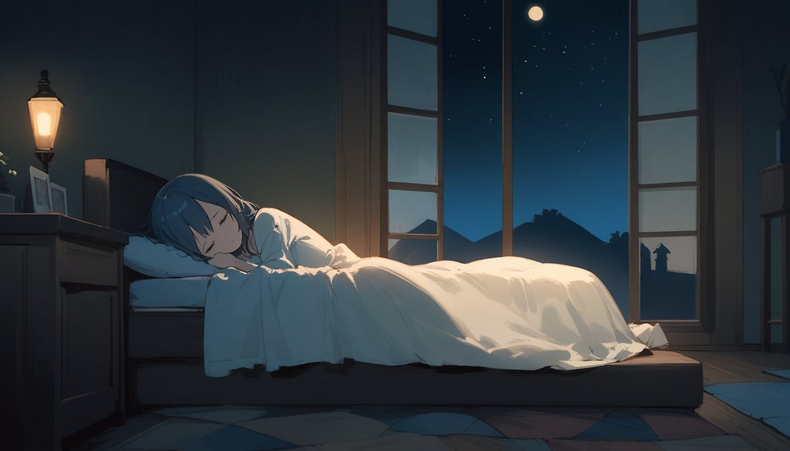
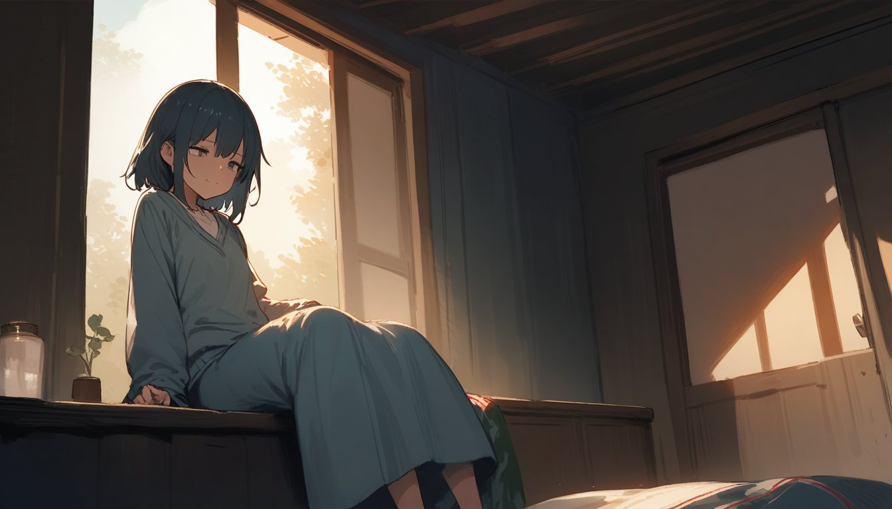

「夢見る少女は眠れない」は、二重放置ゲームです。
① アプリをひらいていない時間が、夢を こく します（ゆめのこさ）。
② ひらいても、少女は ねむっています。自然に起きるまで待つのが、いちばんの遊びかたです。
タップ連打で おこすことも できます。でも、むりやり おこされた少女は、見ていた夢を わすれてしまいます。
自然に目ざめた少女は、夢の話をしてくれます。その夢は、あなたが「ねている間に何をしていたか」で、すこしだけ 変わります。気のせいかもしれない くらい、すこしだけ。
v2 新機能：
🤝 しんらい（信頼度 Float） ── 約束をまもるたびに少しずつ上がる。高いほど、夢に深みが増す。嘘をついたり強制的に起こすと下がる。
🕊️ コウノトリ ── しぜんに起きた朝がじゅうぶんに積み重なると、コウノトリがやってくる。少女は「転生」して、また夢を積み重ねていく。
🌤️ 天気 ── いまいる場所の空模様が、少女の夢にひそかに影響する。
ねむりを ON/OFF の Boolean ではなく、0.0〜1.0 の Float として あつかう——osakenpiro の全プロジェクトを つらぬく設計思想（Boolean → Float / BeeF）の、いちばん しずかな実装です。
画風『ひとあかり』── muted な画面に、ひとつの明かり。
ゆめみが、つぎの夢へ旅立つ。